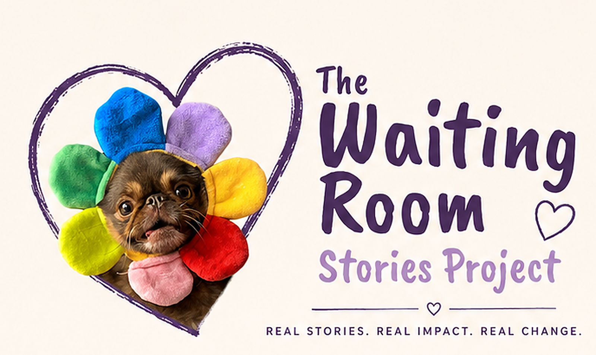
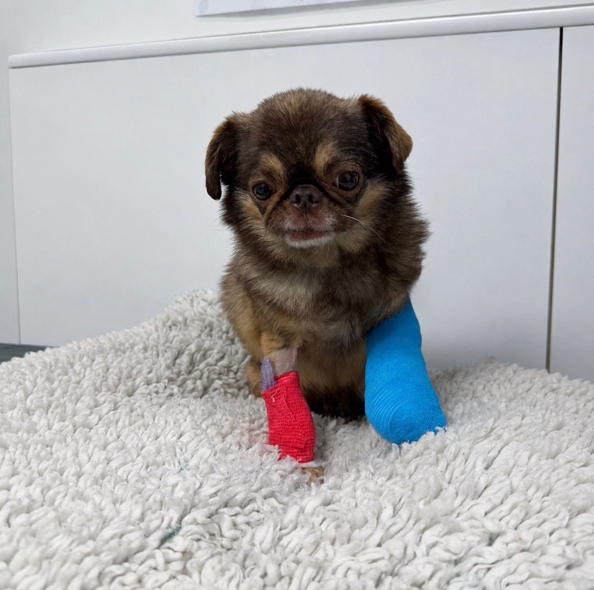

The amount needed now
Can owners understand the treatment estimate, the payment due immediately and what might change?
The Waiting Room Stories Project
When Chilli needed specialist treatment, millions of people could hear his story. Most owners facing an emergency do not have that reach.
We collect experiences of cost, insurance and payment barriers, and use them to develop practical proposals for better access to care. Our first focus is the UK.
This is a reform project. We cannot offer emergency funding or arrange treatment.

From experience to action
We want owners and the people delivering care to help answer practical questions.
Can owners understand the treatment estimate, the payment due immediately and what might change?
Can the hospital and insurer explain direct-payment options and the amount an owner may still need to find?
Can referrals and support routes give people useful financial information before another urgent decision?

Why Chilli’s story matters
Specialist veterinary professionals treated Chilli’s life-threatening neurological illness. Donations from his community, raised through GoFundMe, helped make that care possible.
The question that stayed with Ollie was simple: what happens to the animal whose owner has nobody to ask?
Read why the project beganUK first. US work to follow.
Ollie’s direct experience of UK veterinary care gives us a starting point. US and other international experiences remain welcome; a later US stage will need its own research and partners.
Find a useful way to help